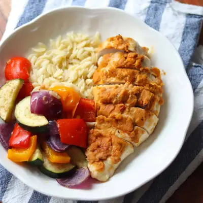

Baked Hummus Chicken

Ingredients
- 4 boneless, skinless chicken breasts
- 1 tablespoon olive oil
- 1 cup hummus (plain, roasted red pepper, or any favorite flavor)
- 1 teaspoon smoked paprika
- 1 teaspoon garlic powder
- 1/2 teaspoon onion powder
- 1/2 teaspoon cumin
- 1 lemon
- 1 medium zucchini, sliced into half rounds
- 2 bell peppers, sliced into 1 inch pieces
- 1 red onion, chopped
- 1 tablespoon olive oil
- 1/2 teaspoon garlic powder
- 1 teaspoon cumin
- salt and pepper (to taste), optional
Steps
- Preheat oven to 400 degrees Fahrenhheit. Lightly grease or line a large sheet pan.
- Prep the Chicken: Place the chicken breasts in sheet pan and coat both sides with olive oil. Combine the seasonings in a small bowl and sprinkle each piece on both sides. Spread a generous layer of hummus over the top of each chicken. Bake in the oven for 15 minutes.
- Prepare the Vegetables: Meanwhile, chop the vegetables and toss with oil and seasonings.
- Add the Vegetables and Finish Baking: After 15 minutes, carefully remove the sheet pan from the oven. Scatter the prepared vegetables around the chicken, squeeze some lemon juice over the chicken, then return the dish to the oven and bake for an additional 10-15 minutes, or until the chicken reaches an internal temperature of 165°F (74°C) and the veggies are tender.
- Optional: Sprinkle some feta or mozzarella cheese over the chicken and veggies during the last 5 minutes of baking.
Recipe by Min Kwon · Kidfriendly Meals, from MJ and Hungryman. Saved here for personal use; the original has the full notes, tips and photos. Open original